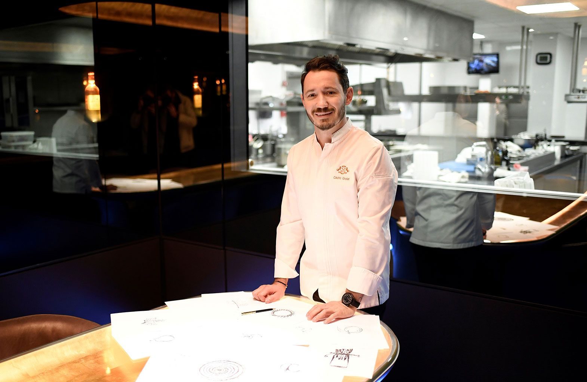

Cedric Grolet
Grolet用新鮮的水果和蛋糕拼寫出一條簡短的Instagram訊息感謝他的粉絲，上面寫著「1M TKS」。
這位巴黎奢華酒店Le Meurice的甜點主廚，作品辨識度之高、個人風格之明顯幾乎無人能敵，他的超現實蛋糕和甜點，宛如一顆顆水果雕塑藝術，無論是蘋果、草莓還是百香果。
上個月，他於畢爾巴（Bilbao）舉行的世界50大最佳餐廳獎的最新版本中榮獲2018年「全球最佳甜點主廚」。
相比之下，Pierre Hermé以他聞名的馬卡龍被稱為甜點界的畢卡索，在Instagram上擁有139,000名粉絲；而法國當地電視名人和甜點主廚Cyril Lignac則擁有582,000名粉絲；
以創造世界著名的Cronut而聞名的國際巨星Dominique Ansel也遠遠落後於333,000名Instagram粉絲，就可看出Grolet迷倒眾生的堅強實力。。

草莓蛋糕
馬卡龍
焦糖布丁
心得